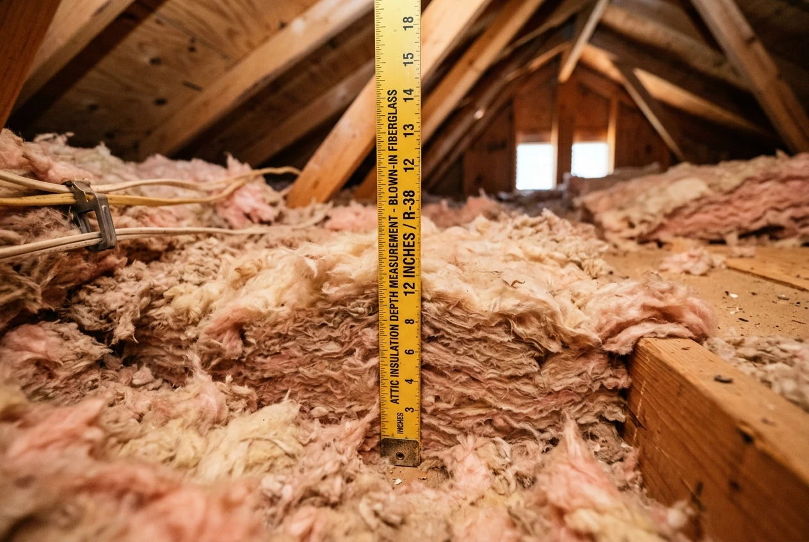
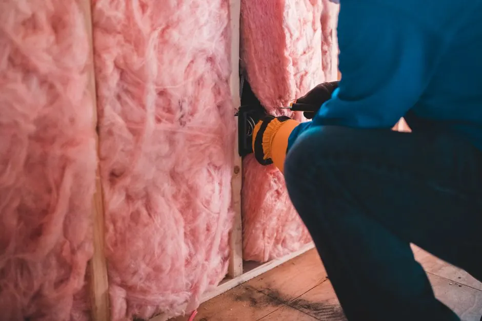
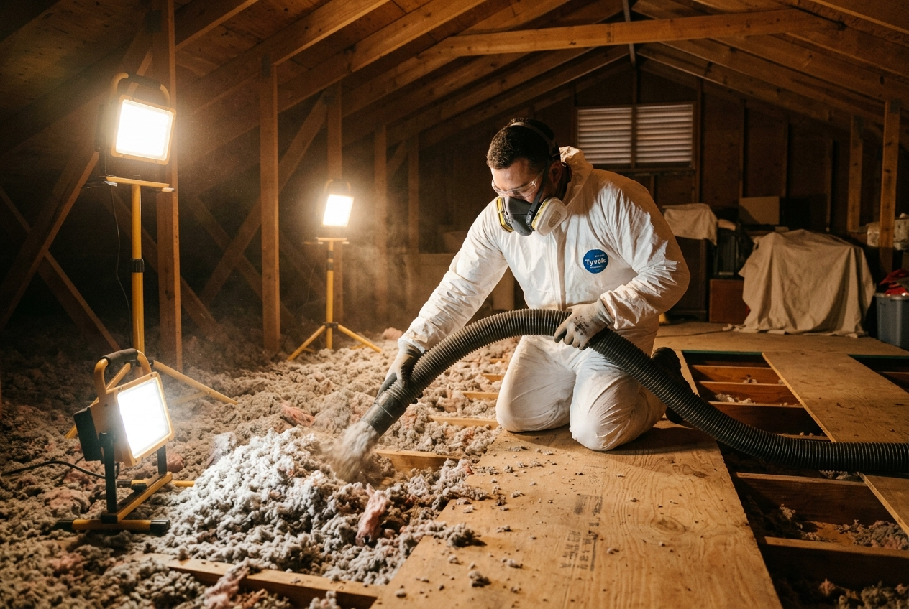

The DOE recommends R-38 to R-49 for Climate Zone 2A, which covers all of Harris County including Tomball. Texas energy codes and the 2021 IECC set R-49 as the minimum for new construction ceilings. R-38 is the minimum target for existing homes. R-49 delivers the best return at current electricity prices.
Attic Insulation in Tomball, TX — Older Builds Running Hot Through June, July, and August
Most Tomball homes built in the 1980s and 1990s now perform at less than half the insulation level the DOE recommends. We upgrade your attic to R-38 or R-49 and complete air sealing before installing new material, so your AC stops running all day and your utility bills drop.
- Attic Inspection: Insulation depth measurements, visible moisture checks, and photos of existing conditions at no cost
- Itemized Quote: A written estimate covering air sealing, insulation materials, and labor
- Air Sealing First: We seal identified attic-floor gaps and penetrations before installing new insulation to reduce unwanted air leakage
We serve Tomball ZIP codes 77375 and 77377. Most jobs are scheduled within one to two weeks.
Tomball Summers Are Brutal on Attic Insulation
Unconditioned attics in Texas reach up to 130°F on summer afternoons. That heat presses down through the ceiling into the rooms where your family lives. Your AC runs constantly trying to keep up with it.
Most Tomball Attics Have Not Been Touched in 30 to 45 Years
Lakewood Forest and Willow Forest started development in the late 1970s and expanded through the 1990s. Gettysburg, Canterbury Forest, Westbourne, and Timbergreen followed the same growth pattern. Original blown-in in those homes has had 30 to 45 years to settle. Performance has dropped from R-19 to about R-11 to R-15 in most of what we see. That is less than half of what the DOE recommends for this climate zone.
Why Older Tomball Homes Need an Insulation Reset
Many Tomball homes built in the 1980s and 1990s still carry their original blown-in insulation. Over 35 to 45 years, that material settles and compresses under intense attic heat. In Lakewood Forest, Willow Forest, and Canterbury Forest attics we inspect, this settling often drops effective performance from R-19 at installation down to R-11 or R-15.
The U.S. Department of Energy recommends R-38 to R-49 for Houston's Climate Zone 2A (explore our Houston Attic R-Value Guide for detailed charts). Texas energy codes and the 2021 IECC set R-49 as the minimum for new construction ceilings. Most older Tomball homes sit at about half that. With air sealing completed first, our blown-in attic insulation brings most Tomball attics to R-38 in a single day.
Attic Insulation Services in Tomball, TX
Every job starts with an inspection. We recommend the right service based on your home's age, layout, and whether pest or moisture history is a factor. Air sealing happens on every vented attic floor job before insulation goes in.

Blown-In Insulation Tomball TX
Blown-in insulation is the right call for most Tomball homes built in the 1980s and 1990s — it fills around joists, pipes, and ductwork without any demolition and can bring most Lakewood Forest or Canterbury Forest homes to R-38 in a single visit. Starting at $0.65/sq ft installed. See our full blown-in insulation service page for what the install day looks like.
Spray Foam Insulation Tomball TX
Applied to the roof deck, spray foam brings the full attic space into your home's conditioned envelope — any HVAC equipment or ductwork in that space stops sitting in extreme summer heat. Open-cell from $1.20/sq ft; closed-cell from $2.20/sq ft. More on our spray foam insulation page including open-cell vs. closed-cell for Tomball homes.

Injection Foam Wall Insulation Tomball TX
Older homes near downtown Tomball along Main Street and Elm Street were built with hollow wall cavities and no wall insulation. Injection foam fills those cavities through small holes drilled from the exterior — no drywall removal needed. Details on our injection foam insulation service page.

Air Sealing Tomball TX
Insulation slows heat transfer; air sealing stops hot attic air from bypassing insulation through gaps at top plates, recessed lights, and HVAC boots. Air sealing combined with insulation cuts heating and cooling costs by about 15%. We include it on every vented attic floor project before insulation goes in.
Attic Fan Installation Tomball TX
An attic fan moves heat out of a vented attic using sunlight only — no added electricity cost. It pairs well with a blown-in job to address both the insulation gap and the ventilation problem at the same time. See our attic fan installation page for specs and pricing.
Insulation Removal Tomball TX
Pest-contaminated, water-damaged, or compacted insulation has to come out before new material goes in — adding new blown-in over damaged material does not solve the problem. We check and photograph the existing condition during the free walkthrough. Full process on our insulation removal page.
Open-cell spray foam expands to fill the full roof deck cavity. It handles moisture vapor in Houston's Gulf Coast humidity and creates a sealed, conditioned attic in one application. If your HVAC air handler or ductwork sits in the attic, open-cell encapsulation is the standard recommendation. It delivers R-3.5 to R-4 per inch and allows the wood structure to breathe.
When Closed-Cell Makes More Sense
Closed-cell spray foam is denser and acts as a vapor barrier. It delivers R-6 to R-7 per inch, which matters when cavity depth is limited. It is the right call for wall applications, crawl spaces, and metal buildings or workshops along the FM 2920 and SH-249 corridor. It also holds up better in areas where direct moisture intrusion is a risk.
Conditioned Attic vs. Vented Attic
A vented attic uses soffit and ridge vents to move heat out. It works with blown-in insulation on the attic floor. A conditioned attic uses spray foam on the roof deck to bring the space inside the building envelope. Homes with HVAC equipment in the attic get the biggest benefit from the conditioned approach. Equipment stops running in extreme heat and duct losses drop significantly.
If my attic is insulated, does ventilation still matter?
Yes, in a vented attic. Insulation slows heat transfer but does not move heat out. Without airflow, heat and moisture build up and shorten shingle life. A solar attic fan paired with blown-in addresses both the insulation gap and the ventilation problem. With spray foam encapsulation the attic becomes conditioned space and the ventilation equation changes because there is no longer an unconditioned cavity.
What happens to ducts that are already in the attic?
Ducts in an unconditioned attic sit in up to 130°F air. Even well-sealed ducts lose efficiency at that temperature because supply air heats up before reaching your rooms. Spray foam encapsulation moves the full duct zone into conditioned space. This is the main reason we recommend spray foam over blown-in for Tomball homes with attic HVAC equipment.
Air Sealing Has to Come First. Here's Why.
Air sealing before insulation is the step that determines whether the insulation works over the next 20 years. Air sealing combined with insulation cuts heating and cooling costs by about 15 percent on average. Most of that savings comes from stopping air movement, not from the insulation layer itself.
What Air Sealing Does That Insulation Alone Can't Fix
Insulation slows heat transfer through solid materials. It does not stop air from moving through gaps. A Tomball attic with R-38 of blown-in but open top plates and recessed light penetrations still lets conditioned air escape and hot attic air push in. Air sealing closes those gaps first. Then the insulation works the way it was designed to.
Where Tomball Attics Lose Air
The three biggest bypass points are top plates at interior walls, recessed light fixtures, and the boots where HVAC ducts connect to ceiling registers. These gaps are invisible from below but account for most of the air exchange between the attic and the living space. Homes near Tomball High School off Quinn Rd and throughout the Tomball ISD zone have these gaps in nearly every attic we inspect.
Why Most Tomball Contractors Skip It
Air sealing adds time to the job. It also adds a line item to the quote. Most competitors in the 77375 and 77377 ZIP codes skip it or treat it as an optional add-on. We include it on every vented attic floor project, and it shows up as a separate line on your written quote.
Why does air sealing have to come before insulation?
Insulation slows heat transfer through solid materials but does not stop air from moving through gaps. Open top plates, recessed lights, and HVAC boots let hot attic air push directly into the living space your AC is cooling. Air sealing plus insulation cuts heating and cooling costs by about 15 percent on average. Sealing the bypass points first is what makes the insulation perform.
Gulf Coast Humidity, Moisture, and Mold in Tomball Attics
Moisture is the second reason Tomball attic insulation fails, after age. Tomball sits at the northwest edge of Harris County in a Gulf Coast climate zone. Summer relative humidity in the area regularly exceeds 80 percent. That moisture enters attic insulation through every gap in the ceiling plane.
How Humidity Gets Into Your Attic and Stays There
Warm humid air rises into the attic through every ceiling penetration. When it contacts a cooler surface, it condenses. Over years, that moisture compresses blown-in insulation, drops its R-value further, and creates conditions for mold. Houston summers are long enough that this is a real problem in any home with unsealed ceiling gaps. It is one reason Tomball attics from the 1980s degrade faster than the national average for blown-in lifespan.
What Moisture Damage Looks Like
If you notice dark patches in the blown-in, a musty smell when you open the attic hatch, visible staining on the decking, or material that is clumped and matted rather than fluffy, it means the old material has to come out before new insulation goes in. Adding new blown-in over wet or damaged material traps moisture and makes the problem worse. We check and photograph the existing condition during the free walkthrough so you see exactly what is there.
Which holds up better in Tomball humidity, blown-in or spray foam?
Blown-in works well on attic floors in a properly vented attic. For roof deck encapsulation in Gulf Coast conditions, spray foam is more durable long-term because it creates a fully sealed assembly that moisture cannot enter. For homes with a history of moisture issues, spray foam is the stronger choice over a 20-plus year timeframe.
Your Tomball Attic Is Costing You Money. Here Are the Signs.
Four problems show up in almost every Tomball home we inspect that has original, never-replaced attic insulation.
Your AC Runs All Day and Never Catches Up
An AC system sized for your home should reach your set temperature and cycle off. If it runs from noon to midnight every summer day and the upstairs still feels hot, the attic is the first place to check. A properly insulated attic with sealed bypasses takes significant heat load off the system.
The Upstairs Is 10 Degrees Hotter Than Downstairs
A 10-degree temperature gap between floors is a common complaint in 1980s Tomball homes near Willow Forest and Gettysburg. The cause in almost every case is inadequate attic insulation combined with unsealed air bypasses at the ceiling plane.
Your Insulation Is Original to the House
Before 2000, most Harris County homes were built to code standards that required R-19 or less in attics. If the insulation has never been replaced, it has also had 25 to 45 years to settle. What was R-19 at install performs at R-11 to R-15 today in most Tomball homes we measure.
You Had a Rodent or Pest Problem in the Attic
Rats and mice nest in blown-in insulation and compress it significantly. They also contaminate it in ways that make topping up impossible. Insulation with pest damage has to come out. We inspect for this at the free walkthrough and show you photos before recommending removal.
Why does blown-in insulation stop working over time?
Blown-in settles and compresses under its own weight over 15 to 30 years, reducing R-value. Heat cycling, moisture, and pest activity speed that process up. Original 1980s insulation in Tomball has had 35 to 45 years to settle. What was R-19 at installation now performs at R-11 to R-15 after 35 to 45 years of settling.
How Much Does Attic Insulation Cost in Tomball, TX?
Attic insulation cost in Tomball depends on service type, attic size, and whether old material needs to come out first. These are typical ranges for the Greater Houston market.
| Service | Price Range | 1,500 sq ft Attic Estimate | Best For |
|---|---|---|---|
| Blown-in insulation (to R-38) | $0.65 to $0.95 per sq ft | $975 to $1,425 | Most 1980s and 1990s Tomball homes |
| Open-cell spray foam (roof deck) | $1.20 to $1.85 per sq ft | $1,800 to $2,775 | Homes with HVAC equipment in attic |
| Closed-cell spray foam (walls, crawl space) | $2.20 to $3.10 per sq ft | Quote by project | Moisture areas, metal buildings along FM 2920 |
| Injection foam (wall cavities) | Quote by wall section | Quote by project | Older homes near Main St and Elm St |
| Insulation removal | $1.00 to $2.00 per sq ft | $1,500 to $3,000 | Pest or moisture damaged attics |
Written quotes cover every line item before work is scheduled. Air sealing plus insulation saves about 15 percent on annual heating and cooling costs on average. On a $300 monthly summer electricity bill that is $45 a month back. A $1,400 blown-in job with air sealing pays back in about three summers.
CenterPoint Energy offers rebates for qualifying insulation and weatherization upgrades in Greater Houston through their home energy efficiency programs. The federal Inflation Reduction Act offers a tax credit of up to 30 percent of insulation costs through 2032 for upgrades that meet required R-values. We confirm eligibility during the estimate.
How an Attic Insulation Job Works in Tomball. Start to Finish.
A Tomball attic insulation job follows five steps. No work is scheduled until you have a written quote and have signed off on it.
1
Free Attic Walkthrough and Depth Measurement
We climb into the attic, measure current insulation depth with a ruler, check for moisture and pest damage, and photograph the existing condition. The walkthrough takes 30 to 45 minutes. You see everything before any quote is written.
2
Written Quote Before Anything Gets Scheduled
The quote covers every line item: air sealing, removal if needed, insulation materials, and labor. No hidden charges. No work starts until you approve the quote. If you decide not to move forward, the walkthrough costs you nothing.
3
Air Sealing the Bypass Points First
We seal top plates at interior walls, recessed lights, and HVAC duct boots before insulation goes in. This is the step most Tomball contractors skip. We include it on every vented attic floor project. It shows up as its own line on your quote.
4
Insulation Installed to the Correct R-Value
Blown-in is applied and verified with depth rulers placed across the attic floor before we leave. Spray foam is checked for thickness after cure. The job is not done until measurements confirm the target R-value is reached.
5
Final Check and Cleanup
Final depth check, full coverage confirmed, work area cleaned. You receive before and after photos. Most Tomball jobs finish in one day.
Tomball Neighborhoods We Cover. How Close We Are.
Based in Cypress TX, a short drive from every Tomball subdivision. ZIP codes 77375 and 77377 cover three distinct housing situations — each points to a different primary service.
Attic Insulation Questions Tomball Homeowners Ask
Blown-in on the attic floor is the right call for many Tomball homeowners. It is cost-effective, fast, and upgrades R-value in a single visit. Spray foam applied to the roof deck makes more sense when your HVAC air handler sits in the attic, because it brings the duct zone into conditioned space. The free walkthrough tells us which one fits your home.
Yes. Injection foam fills wall cavities through small holes drilled from the exterior. No drywall removal needed. This is the approach for older homes near the Main Street corridor, around Elm Street, and near the Tomball Museum Center where homes were built without wall insulation. It is by far the cleanest and most cost-effective way to add wall R-value in an occupied home without a full interior demo.
A blown-in top-up with air sealing takes 4 to 6 hours for most Tomball homes. Spray foam encapsulation takes a full day. Jobs requiring removal of old material first add time depending on attic size. Most Tomball jobs are scheduled within one to two weeks of the walkthrough.
Old insulation must come out if it is wet, moldy, or pest-contaminated. Dry, undamaged material in good condition can be topped up. We check and photograph both conditions during the free walkthrough. Adding clean blown-in over contaminated material traps moisture and makes the problem worse.
Book a Free Attic Walkthrough in Tomball
We are a locally owned, fully insured insulation contractor based in Cypress and serving the entire Tomball community. A free attic walkthrough means we measure your current insulation depth, check for moisture and pest damage, and give you a written itemized quote before any work begins. We cover all of ZIP codes 77375 and 77377.
After you submit: our team calls within a few hours to schedule the walkthrough. It takes 30 to 45 minutes. You leave with an accurate calculation of your attic's current thermal performance, photos of the existing condition, and a written quote. No work is scheduled until you approve it. No charge for the walkthrough regardless of whether you move forward.
Call or submit online: 832-291-2738
Last updated: October 2026